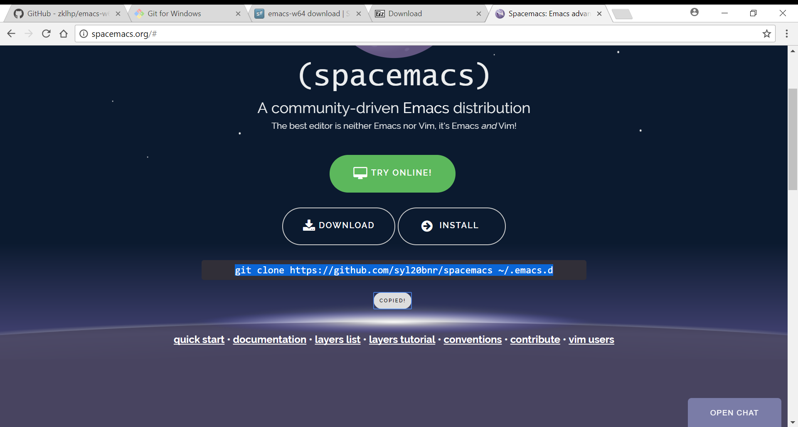
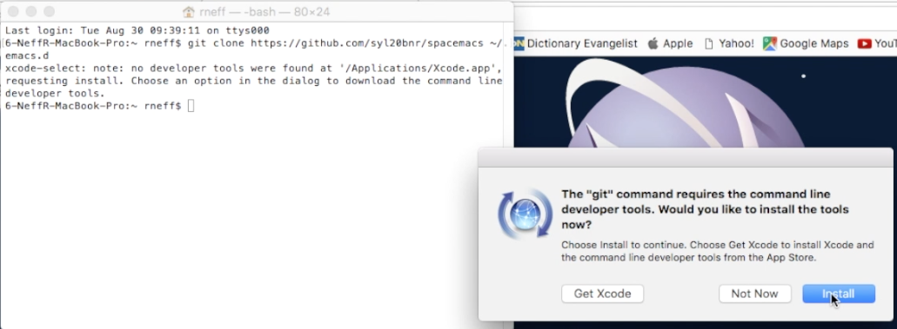
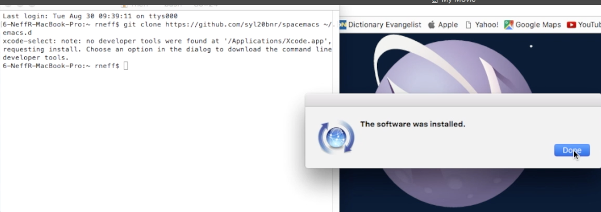
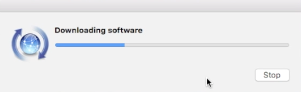
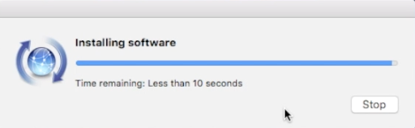
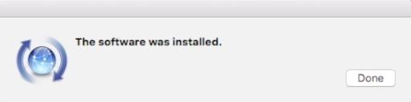
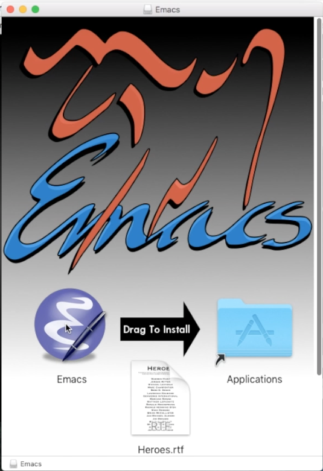
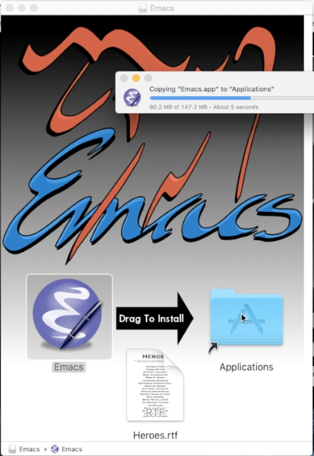

Welcome to first three odds dot org
Course
This is the Fall 2017 version of Discrete Mathematics I — AKA DM1 — AKA CS 237.
Syllabus
Catalog Description
What this course is about: Mathematics for computer science.
This course introduces the mathematical topics needed to provide a solid theoretical foundation for computer science. The following topics will be lightly covered:
- Sets and Logic
- Functions and Relations
- Combinatorics and Probability
- Number Theory and Practice
- Trees and Graphs
- Languages and Grammars
Objectives
- Master the basic terminology and operations of sets and logic, functions and relations, combinatorics and probability, number theory and practice, trees and graphs, and languages and grammars.
- Demonstrate logical reasoning through solving problems.
- Learn basic functional programming by way of lisp, reading and writing lisp code.
- Interpret the meaning of mathematical statements in the context of real-world applications.
- Think like a mathematician by making good connections.
Prerequisite
You must have successfully completed the following course:
- CS 165 Object-Oriented Software Development
Required Text
Metaphors Be With You: A Tireless Work on Play on Words
Online only — no print edition.
Requirements
You are required to…
- attend class, as attendance and participation factor heavily into your grade.
- read assigned portions of the course materials, and come to class prepared to discuss and deepen your understanding of selected topics.
- keep a learning journal (your workbook) where you will put your answers to homework assignments, and a brief report on what you are learning.
Assignments
Homework assignments are of three types: Exercises, Problems, and Puzzles.
Exercises
Exercises are individual and group learning activities that will require either a small amount of preparation before class, or participation during class, or both. Although time will be given during class, some time outside of class may also be required.
Problems
Problems are weightier, more challenging assignments that invite you to explore in more depth certain topics in discrete mathematics, as well as increase your lisp/functional programming prowess.
Puzzles
Puzzles are like problems, only with another added measure of difficulty that will require even more ingenuity, deep thought and persistent effort to solve. Think “Puzzle Room” — where you must solve a problem in order to escape from a room. But the hints are more obscure, and in fact the statement of the problem may be obscure, indirect or encoded somehow.
Grading
At the beginning of the semester you will choose the grade you want to strive for, and each week you will justify whether your learning is in line with that grade. Please acquaint yourself with the BYU-Idaho Grading System to aid you in your self-assessment.
Grade Category Weighting
- Attendance and Participation: 30%
- Each unexcused absence will incur a 5% penalty. If you are absent six times you will fail the class.
- You must bring a laptop or other Internet-connectable (and tools ready) device to each class meeting.
- Workbook: 70%
Schedule
Reading the book is a regular activity you are tasked with. There are three main sections and essentially three months (12 full weeks) in the semester. That’s one main section per month, or about one subsection every week. You are welcome to read ahead (but don’t get behind) and work exercises/problems/puzzles at your own pace, but answer keys will be revealed only after the “due date/time” (typically Saturdays at 6:00 pm) has passed.
Tools
Any Computer Professional, no matter what specialty area he or she focuses on (science, engineering, technology, math), needs a good set of tools. The two main tool platforms are Windows and Mac. If you prefer Linux (or some other similar platform), you probably do not need any help provisioning your professional toolbox. Otherwise, select your preference and read on. Note that the tools you will need are few, but powerful! Note too that you must have a steady, reliable Internet connection (use the BYUI WiFi, not BYUI Visitor) to be successful.
Windows
64-bit only. If you do not have 64-bit Windows, please get it!
Git
[ ]Install Git for Windows: https://github.com/git-for-windows/git/releases/download/v2.14.1.windows.1/Git-2.14.1-64-bit.exe Or less directly, if you want to have a fuller experience, start at: https://git-for-windows.github.io/
[ ]Run the installer and click Next (something like 8 times) to accept the defaults and then click Install.
Emacs
Set HOME Environment Variable
[ ]Bring up the Windows Command Shell (cmd.exe) by pressing the “Windows” key (the one with the Windows logo on it) and, while holding that key down, typingRto open theRundialog and enteringcmd.[ ]Enter the following command (replacing uname with your username first):
setx HOME "C:\Users\uname"
[ ]Close this Command window.
Get 7-zip
[ ]Download the 7-zip installer executable at http://www.7-zip.org/a/7z1701-x64.exe[ ]Accept the default where to install.[ ]Close the installer.
Use 7-zip
[ ]Download the file from https://sourceforge.net/projects/emacsbinw64/files/latest/download[ ]This will land the installation fileemacs-w64-25.2-O2-with-modules.7zin your Downloads.[ ]Open it using 7-zip, and extract it somewhere easy to find (like your HOME directory). It should look something like this:

[ ]Find therunemacsexecutable and make a shortcut to it, but DO NOT RUN IT YET!

Spacemacs
[ ]Visit the home page and browse around: http://www.spacemacs.org/[ ]Bring up thebashcommand shell (that came with Git) by pressing the “Windows” key (the one with the Windows logo on it) and, while holding that key down, typingRto open theRundialog and enteringbash.[ ]Enter the following command in thebashwindow. Save typing by copying it to your clipboard from the box below or from the Spacemacs home page, as shown in the following screenshot.
git clone https://github.com/syl20bnr/spacemacs ~/.emacs.d

[ ]Be patient, it will take a few seconds to clone this large repository to your computer.[ ]Now to configure Spacemacs, enter this command in the same bash window:
git clone https://github.com/rickneff/firstthreeodds ~/.spacemacs.d
[ ]Start up Emacs (use your shortcut) and the Spacemacs installation process will begin.[ ]Be patient, it’s downloading and installing a LOT of stuff!
Mac
Git
Git may already be installed on your Mac, but if not, when you type a git
command in a Terminal window (see below) you will see something like the
following:


The dialog boxes in between:



Emacs
[ ]Get the installer here: https://emacsformacosx.com/emacs-builds/Emacs-25.2-universal.dmg[ ]Install Emacs -— but DO NOT RUN IT YET! The installation will start when you drag the Emacs icon to the Applications folder, as shown in the following screenshots:
 
Spacemacs
[ ]Visit the home page and browse around: http://www.spacemacs.org/[ ]TypeCommand Spaceto bring up the Spotlight Search box and enterterminalto open a Terminal window.[ ]Enter the following command in the Terminal window. Save typing by copying it to your clipboard from the box below or from the Spacemacs home page, as shown in the following screenshot.
git clone https://github.com/syl20bnr/spacemacs ~/.emacs.d

[ ]Be patient, it will take a few seconds to clone this large repository to your computer.[ ]Now to configure Spacemacs, enter this command in the same Terminal window:
git clone https://github.com/rickneff/firstthreeodds ~/.spacemacs.d
[ ]Start up Emacs (use the Spotlight Search box) and the Spacemacs installation process will begin.[ ]Be patient, it’s downloading and installing a LOT of stuff!
Helps
TODO Glean What You Can From Guides and Cheat Sheets For Beginners
TODO Download a Sample Workbook
It’s the start of one, at any rate. Clicking on the link will download the file. Please replace my name and email address with yours before proceeding.
Note that you are not required to organize it in the way suggested. It just shows one way of many to do it.
TODO Get Answers to Assignment for Week 00
Valid keys are simple transformations of your I-Number.
| Identifier | The key for which is your I-Number … |
|---|---|
| CRC | plus 195040 |
| DGZ | minus 195060 |
| CHJ | times 195086 |
| DOK | plus 195018 (if your I-Number is even) |
| minus 195018 (if your I-Number is odd) | |
| UJF | minus 195165 (if your I-Number is odd) |
| plus 195165 (if your I-Number is even) |